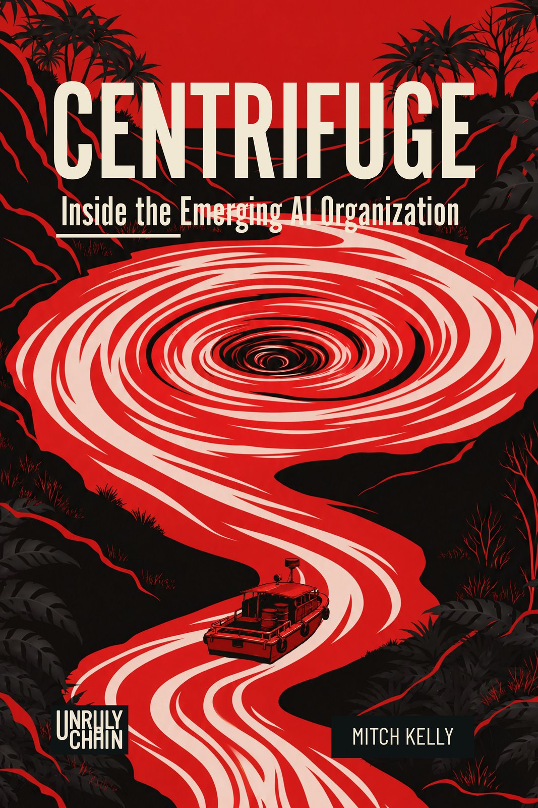

Press / Media
Press resources
Reviewers, event organizers, and media inquiries can contact Unruly Chain directly.
Centrifuge
Press kit
Book description, author biography, and images for reviewers and media, in one file.
Download press kit (ZIP, 561 KB)Images
Book and author

For print-resolution artwork, interviews, or additional publication information, contact contact@unrulychain.com.
Book description
Centrifuge: Inside the Emerging AI Organization
Centrifuge argues that AI does not transform organizations merely by making existing work faster. It applies force. Under that force, authority, judgment, memory, capability, and accountability separate from the structures that once held them together.
That separation exposes what an organization actually knows, where decisions really happen, which roles create value, and which existed because coordination used to be expensive. The emerging AI organization is not simply more productive. It can require less organization to carry the same capability.
As execution becomes abundant, scarcity moves. Judgment, taste, direction, context, and the willingness to own a decision become more valuable, not less.
Publishing September 2026.
Author biography
Mitch Kelly
Mitch Kelly has worked in military intelligence, federal technology, academic science, biotech, and enterprise software over a career spanning nearly four decades. He served in a U.S. Army Special Forces unit as a Russian linguist and intelligence analyst, led federal IT operations as site lead at FDIC headquarters, earned a National Science Foundation Fellowship to study bioinformatics at the University of Michigan, and built clinical data infrastructure as CTO of BioViva Sciences, a gene therapy company. He currently leads M&M Kelly, an AI transformation advisory firm.
His books draw on that range of experience. Centrifuge examines how AI reveals what organizations actually are. Last Old Man applies similar scrutiny to scientific institutions.
Kelly holds a BS in Biology and a BS in Chemistry from Florida International University, an MS in Bioinformatics from the University of Michigan, and a third-degree black belt in aikido. He speaks English, Spanish, and Russian and currently lives in North Carolina while based in New England.
Contact
For review copies, interviews, events, and other media requests, contact Unruly Chain.